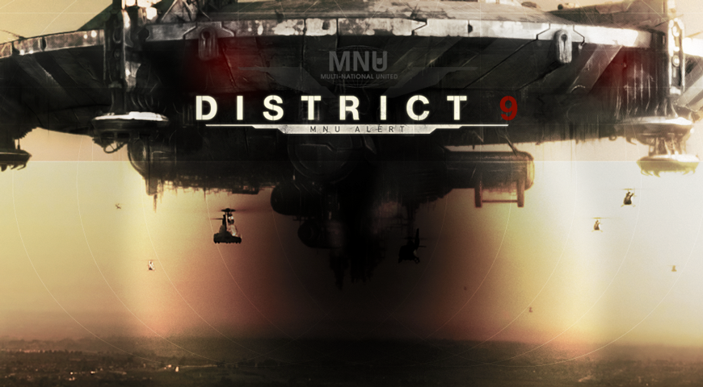

game trailerobjectives
to build an online game in conjunction with the worldwide campaign of the release of Peter Jackson and Neil Blomkamp’s District 9 movie.
role + responsibilities
creative director
- creative lead for both the digital web campaign and games
- led team of designers, developers, 3D animators/modelers and producers
deliverables in this role game document (incl. play mechanic, level design, character atributes, etc.), motion script and early concept sketches.
client
sony pictures | usa
deliverables
- flash-based game with integrated Facebook protocol features
- pre-rendered 3D game with parallel storyline that allows player to play as MNU (Multi Nationals United) soldiers or aliens
- original typeface creation for the invading aliens characters
2010 Webby Awards | People's Choice for Web Campaign
. . . . .
#trigger, #shanghai, #losangeles, #VideoGames, #OnlineGames, #CreativeDirection, #ux, #wires, #IA, #GameFlow, #GameMechanic, #storyline
. . . . .